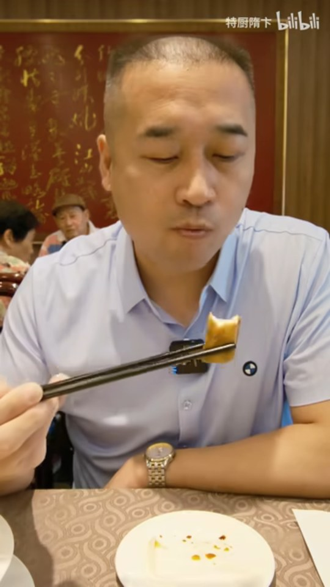
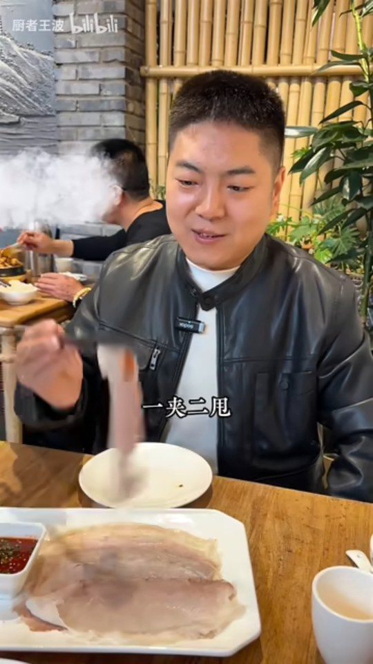
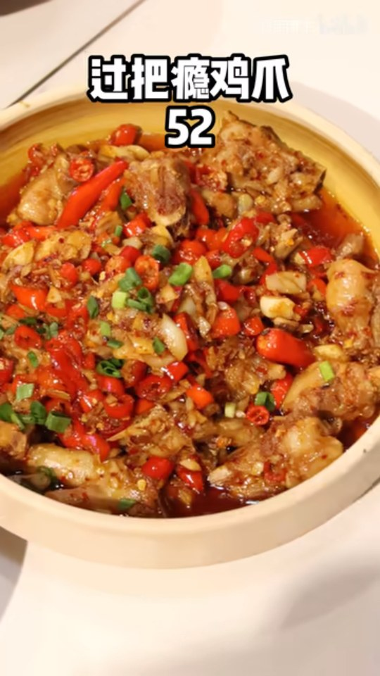
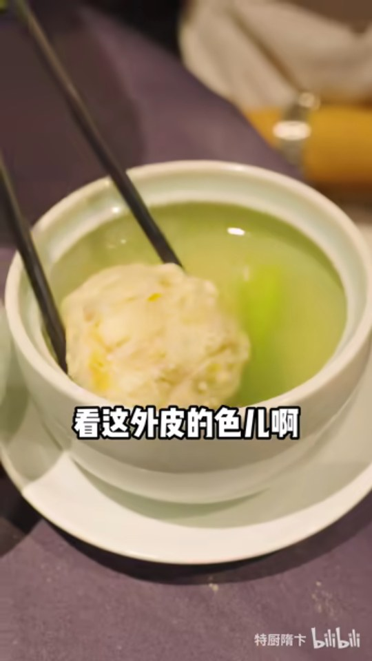
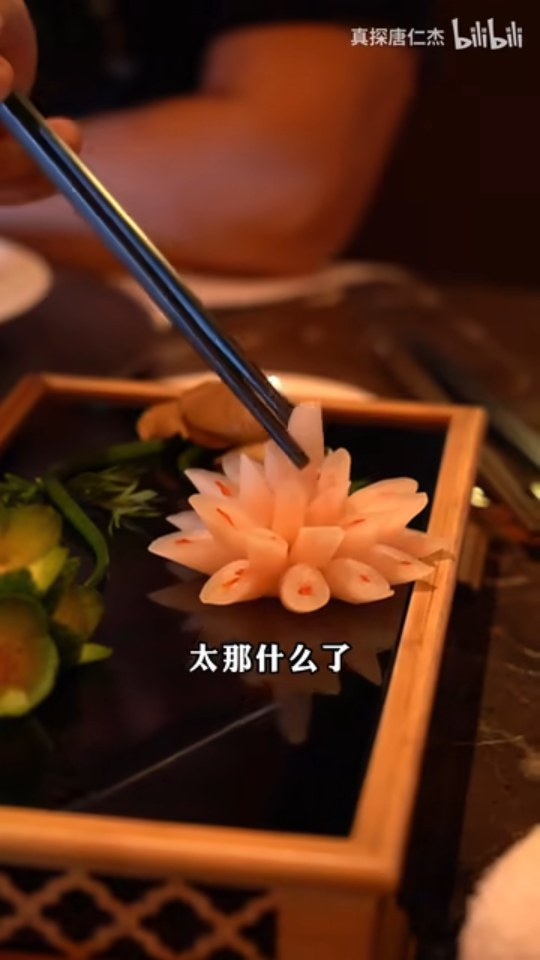
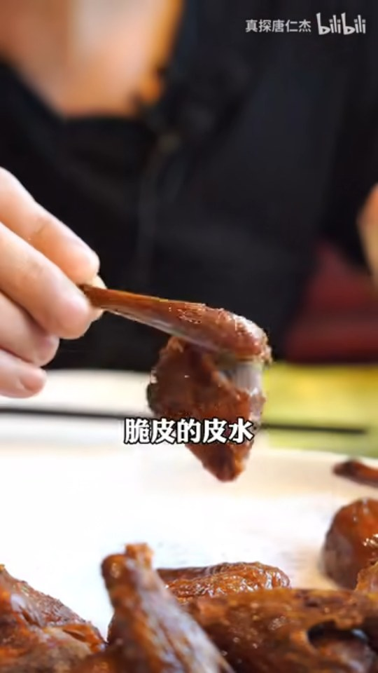
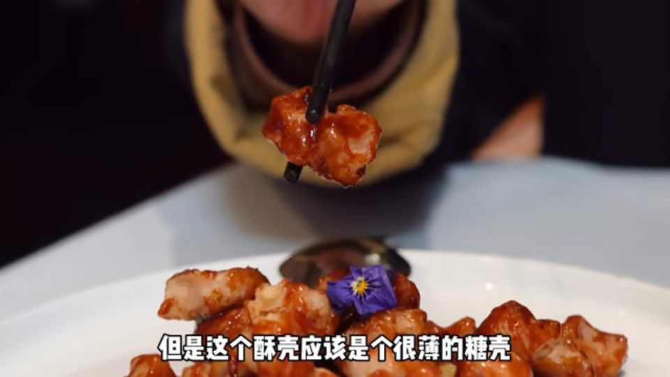
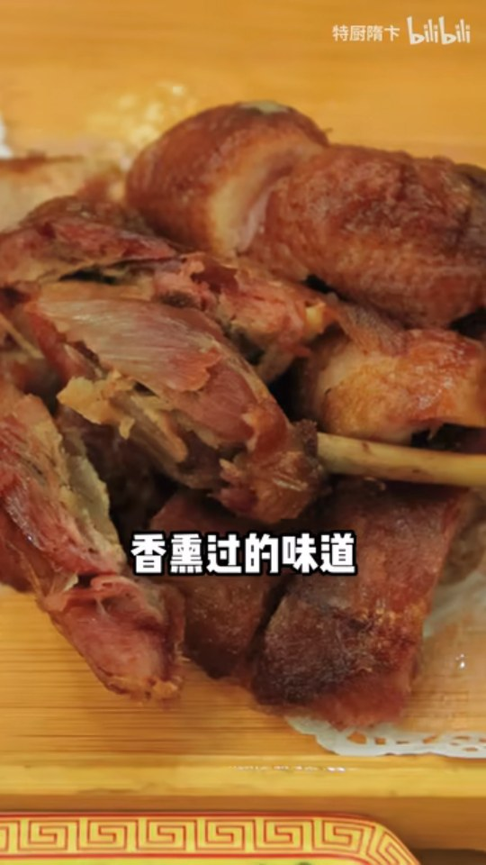
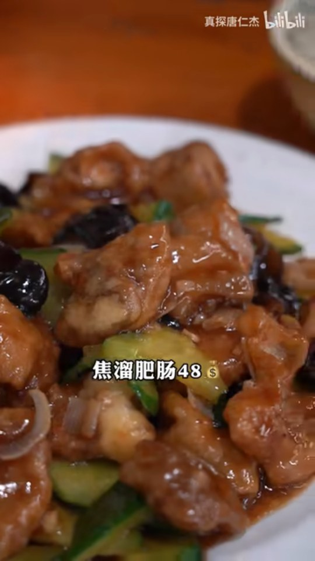
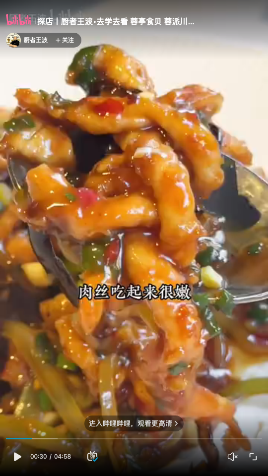

11 家门店原视频截图
泰丰楼
特厨隋卞 · P1 · 170.1 秒
BV1CB4y147BG

北京宜宾招待所·餐厅
厨者王波 · P1 · 161.6 秒
BV1wT1WYxEjC

潇湘阁（三里屯SOHO店）
特厨隋卞 · P1 · 121.1 秒
BV1Lh4y1d7U5

老吉堂·吉来（正大中心店）
特厨隋卞 · P1 · 162.4 秒
BV1D64y1K7uj

富春居（北京璞瑄酒店店）
真探唐仁杰 · P1 · 63.4 秒
BV1144y1G7Fo

同和居（月坛店）
真探唐仁杰 · P1 · 159.6 秒
BV1Dg411j73k
寂川（西大望路店）
特厨隋卞 · P1 · 35.2 秒
BV1ma411v7V1

聚德楼饭庄（劲松店）
真探高文麒 · P1 · 207 秒
BV1aj411A7Bg

砂锅居（西四店）
特厨隋卞 · P1 · 44.4 秒
BV1ka411n7Nd

洪福亮酒家（南草厂街店）
真探唐仁杰 · P1 · 88.2 秒
BV1LY4y1k7LX

蓉亭食贝（亚运村店）
厨者王波 · P1 · 30 秒
BV1AdqYYNEDM